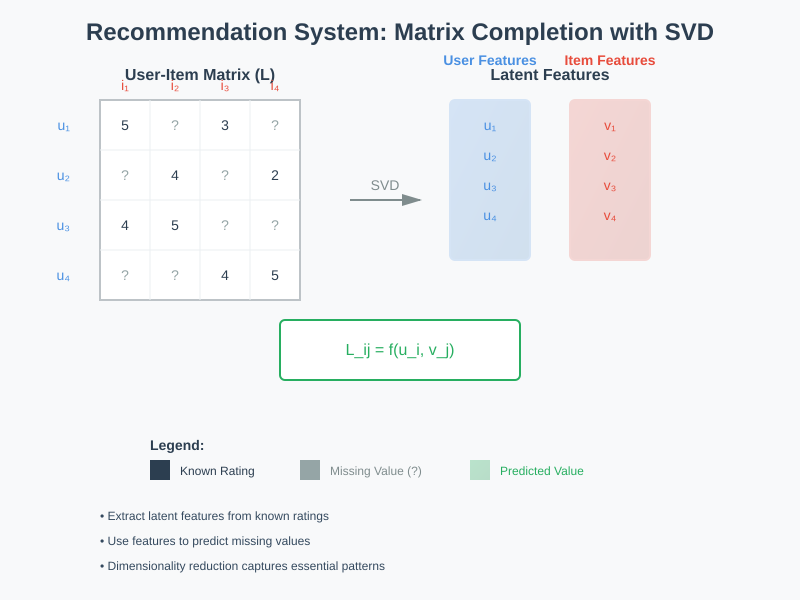
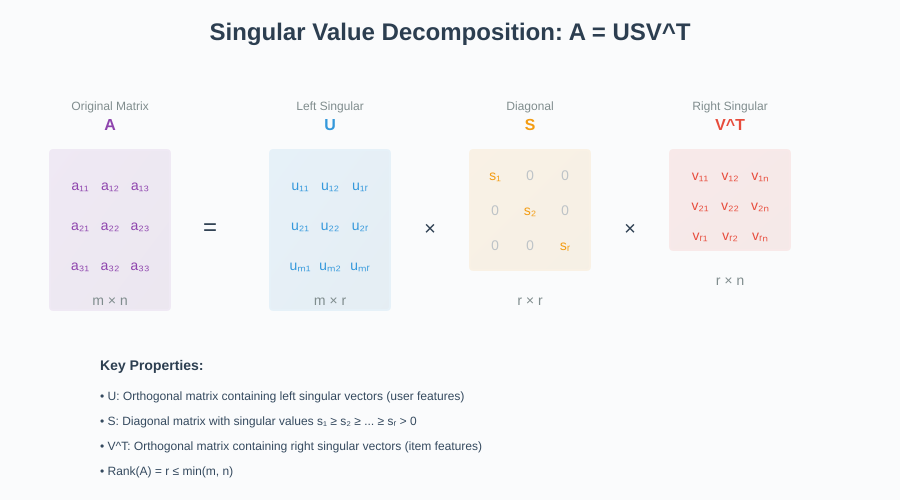
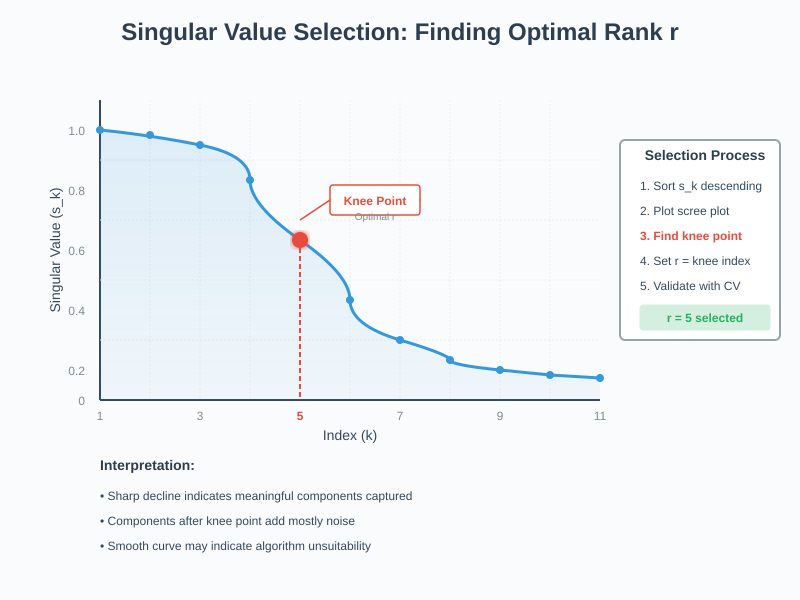
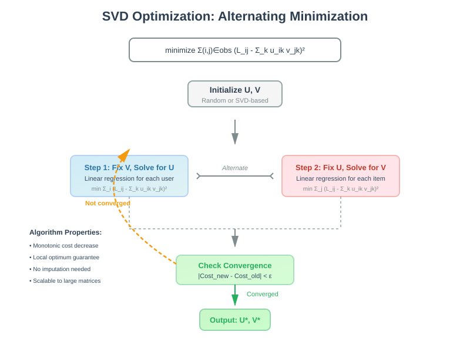

Recommendation Systems - Singular Value Decomposition (SVD)
📚 Quick Navigation
- Overview
- Problem Definition
- SVD Mathematical Foundation
- Algorithm Implementation
- Rank Selection Strategy
- Practical Example
- Optimization Perspective
- Key Insights
- References & Further Reading
Overview
Singular Value Decomposition (SVD) provides a powerful approach to recommendation systems by addressing the fundamental prediction problem: completing a user-item interaction matrix with missing values. This technique extracts latent features that explain the behavior of both users and items.

Core Objective:
- Matrix Completion: Fill missing entries in the user-item rating matrix L
- Latent Feature Extraction: Discover hidden patterns in user preferences and item characteristics
- Dimensionality Reduction: Represent complex interactions with fewer parameters
Problem Definition
The Prediction Problem
Given a partially observed matrix L with user-item interactions, we need to:
Estimate L_ij for any user i and item j by:
- Extracting latent features u_i for users
- Extracting latent features v_j for items
- Computing the interaction: L_ij = f(u_i, v_j)
Mathematical Formulation:
L_ij represents the rating/interaction between:
- User i (with latent features u_i)
- Item j (with latent features v_j)
Matrix Structure
The User-Item Matrix:
- Rows: Users (u_1, u_2, ..., u_m)
- Columns: Items (v_1, v_2, ..., v_n)
- Entries: Ratings/interactions (many missing)
- Goal: Predict missing entries
SVD Mathematical Foundation
Core Decomposition Formula
Any matrix A can be decomposed using SVD as:
A = USV^T

Where:
- U: Left singular matrix (m × r) containing user features
- S: Diagonal matrix (r × r) with singular values
- V: Right singular matrix (n × r) containing item features
- r: Rank of the matrix
Complete Prediction Formula
For the full SVD expansion:
L_ij = Σ(k=1 to min(M,N)) s_k × u_ik × v_jk
Variable Definitions:
- s_k: k-th singular value (importance weight)
- u_ik: User i's affinity for latent feature k
- v_jk: Item j's association with latent feature k
- M, N: Matrix dimensions
Algorithm Implementation
Step-by-Step SVD Process
Step 1: Handle Missing Values
Fill missing values in L with 0 (or use row/column averages for better initialization).
L_missing → 0 or avg(row, column)
Rationale:
- Zero filling: Simple baseline, assumes neutral preference
- Mean imputation: Better for causal dependencies
- Captures existing patterns: Preserves data structure
Step 2: Compute Full SVD
Apply standard SVD decomposition:
L_ij = Σ(k=1 to min(M,N)) s_k × u_ik × v_jk
This decomposes the filled matrix into its singular components.
Step 3: Apply Truncated SVD
Keep only the top r components and normalize:
L̂_ij = (1/p) × Σ(k=1 to r) s_k × u_ik × v_jk
Where:
- r: Number of retained components (rank)
- p: Fraction of observed entries
- L̂_ij: Final prediction for all user-item pairs
Implementation Notes
Key Considerations:
- Normalization factor (1/p): Accounts for data sparsity
- Truncation: Reduces noise and overfitting
- Computational efficiency: O(min(mn², m²n))
Rank Selection Strategy
Determining Optimal Rank r

Selection Process:
- Sort singular values in descending order
-
s_1 ≥ s_2 ≥ ... ≥ s_n
-
Plot the singular values (scree plot)
- X-axis: Index k
-
Y-axis: Singular value s_k
-
Identify the knee point
- Look for sharp decline in values
-
Point where curve flattens
-
Set r at the knee point
- Captures most significant patterns
- Excludes noise components
Decision Criteria:
- Clear knee point: Use that value for r
- Smooth curve: Algorithm may not suit dataset
- No pattern: Consider alternative methods
Practical Example
Matrix Recovery with Known First Row and Column
Given:
- Rank: r = 1
- Singular value: s_1 = 1
- Known: First row and first column of matrix
Solution Process:
Since r = 1 and s_1 = 1, the formula simplifies to:
L_ij = u_i × v_j
Algebraic Manipulation:
Multiply and divide by u_1 × v_1:
L_ij = (u_i/v_1) × (u_1 × v_j) / (u_1 × v_1)
Substitution:
We know that: - u_i × v_1 = L_i1 (first column) - u_1 × v_j = L_1j (first row) - u_1 × v_1 = L_11 (first element)
Final Formula:
L_ij = (L_i1 × L_1j) / L_11
Key Recovery Insights
For rank-1 matrix:
- Required observations: m + n - 1
- Can recover: All m × n values
Generalization for rank-r:
- Required observations: Approximately (m + n) × r
- Recovery guarantee: Full matrix reconstruction possible
Optimization Perspective
Formulation as Optimization Problem
When dealing with noisy, partially observed data:
minimize Σ(i,j)∈obs (L_ij - Σ(k=1 to r) u_ik × v_jk)²
Subject to:
- u_ik ∈ ℝ for 1 ≤ i ≤ N, 1 ≤ k ≤ r
- v_jk ∈ ℝ for 1 ≤ j ≤ M, 1 ≤ k ≤ r

Alternating Minimization Algorithm
Step 1: Fix V, Solve for U
Treat as linear regression for each user i:
minimize Σ(i∈obs) (L_ij - Σ(k=1 to r) u_ik × v_jk)²
This becomes:
minimize Σ(i∈obs) (Y_i - x_i × β)²
Where Y_i = L_ij and β represents the v_jk values.
Step 2: Fix U, Solve for V
Treat as linear regression for each item j:
minimize Σ(j∈obs) (L_ij - Σ(k=1 to r) u_ik × v_jk)²
Similarly becomes:
minimize Σ(j∈obs) (Y_j - x_j × β)²
After Finding U and V:
Produce estimate for any i, j:
L̂_ij = Σ(k=1 to r) u_ik × v_jk
Algorithm Advantages
Key Benefits:
- No imputation needed: Works directly with observed entries
- Handles noise: Robust to measurement errors
- Scalable: Can be parallelized
- Flexible: Easy to add regularization
Note: This optimization approach uses only observed entries and does not require filling missing values as in traditional SVD.
Key Insights
Matrix Recovery Properties
Fundamental Relationship:
For rank-r matrix:
Observations needed ≈ (m + n) × r
Total entries = m × n
Recovery Guarantees:
- Rank 1: Need m + n - 1 observations
- Rank 2: Need approximately 2(m + n) observations
- Full rank: Need all m × n observations
Practical Considerations
Algorithm Selection:
- Dense matrices: Traditional SVD with imputation
- Sparse matrices: Optimization-based approach
- Large-scale: Distributed implementations
- Real-time: Incremental updates
Performance Factors:
- Data sparsity: Higher sparsity → lower optimal rank
- Noise level: More noise → use fewer components
- Computational resources: Balance accuracy vs. speed
- Cold start problem: Special handling for new users/items
Implementation Best Practices
Preprocessing:
- Normalize ratings: Center and scale data
- Remove biases: Global, user, and item biases
- Handle outliers: Robust scaling methods
Evaluation:
- Cross-validation: Determine optimal rank
- RMSE/MAE: Measure prediction accuracy
- Coverage metrics: Assess recommendation diversity
🔧 Code Implementation
Python Example with NumPy
import numpy as np
from scipy.sparse.linalg import svds
from scipy.sparse import csr_matrix
def svd_recommendations(ratings_matrix, k=50):
"""
Perform SVD-based matrix factorization for recommendations
Args:
ratings_matrix: User-item interaction matrix (sparse or dense)
k: Number of latent factors (rank)
Returns:
predictions: Completed matrix with predictions
"""
# Handle sparse matrix
if not isinstance(ratings_matrix, csr_matrix):
ratings_matrix = csr_matrix(ratings_matrix)
# Compute truncated SVD
U, s, Vt = svds(ratings_matrix, k=k)
# Convert s to diagonal matrix
s_diag = np.diag(s)
# Reconstruct the ratings matrix
predictions = np.dot(np.dot(U, s_diag), Vt)
return predictions
def alternating_minimization(L_obs, r, max_iter=100, tol=1e-4):
"""
Alternating minimization for matrix factorization
Args:
L_obs: Dictionary of observed entries {(i,j): rating}
r: Rank for factorization
max_iter: Maximum iterations
tol: Convergence tolerance
Returns:
U, V: Factor matrices
"""
# Initialize U and V randomly
m = max(i for i, j in L_obs.keys()) + 1
n = max(j for i, j in L_obs.keys()) + 1
U = np.random.randn(m, r) * 0.01
V = np.random.randn(n, r) * 0.01
for iteration in range(max_iter):
# Fix V, update U
for i in range(m):
# Get items rated by user i
items = [j for (ui, uj) in L_obs.keys() if ui == i]
if items:
A = V[items, :]
b = [L_obs[(i, j)] for j in items]
U[i, :] = np.linalg.lstsq(A, b, rcond=None)[0]
# Fix U, update V
for j in range(n):
# Get users who rated item j
users = [i for (ui, uj) in L_obs.keys() if uj == j]
if users:
A = U[users, :]
b = [L_obs[(i, j)] for i in users]
V[j, :] = np.linalg.lstsq(A, b, rcond=None)[0]
# Check convergence
error = sum((L_obs[(i,j)] - np.dot(U[i,:], V[j,:]))**2
for i, j in L_obs.keys())
if error < tol:
break
return U, V
🤗 Hugging Face Models
Explore pre-trained recommendation models: - microsoft/bert4rec - Sequential recommendation - amazon/dpr-qa-ctx_encoder - Dense retrieval - SamLowe/roberta-base-go_emotions - Sentiment-aware recommendations
📊 Google Colab Demo

Interactive notebook demonstrating SVD-based recommendations with real datasets.
References & Further Reading
📚 Academic Papers
- Koren, Y., Bell, R., & Volinsky, C. (2009) - "Matrix Factorization Techniques for Recommender Systems" - IEEE Computer Society
- Srebro, N., & Jaakkola, T. (2003) - "Weighted Low-Rank Approximations" - ICML 2003
- Candès, E. J., & Recht, B. (2009) - "Exact Matrix Completion via Convex Optimization" - Foundations of Computational Mathematics
- Zhou, Y., Wilkinson, D., Schreiber, R., & Pan, R. (2008) - "Large-Scale Parallel Collaborative Filtering for the Netflix Prize" - AAIM 2008
🎓 Learning Resources
- Stanford CS246: Mining Massive Datasets - Course Materials
- Coursera: Recommender Systems Specialization - University of Minnesota
- Fast.ai: Deep Learning for Coders - Collaborative Filtering Deep Dive
- Google Developers: Machine Learning Crash Course - Recommendation Systems
🛠️ Implementation Libraries
- Surprise (Python): Scikit-learn inspired library for recommender systems
- LightFM: Hybrid content-collaborative filtering
- TensorFlow Recommenders (TFRS): Deep learning framework for recommendations
- Apache Spark MLlib: Distributed ALS implementation for large-scale SVD
📖 Additional Resources
- Netflix Prize Papers: Collection of winning approaches using SVD variants
- RecSys Conference Proceedings: Latest advances in recommendation systems
- Amazon's Item-to-Item Collaborative Filtering: Industrial implementation insights